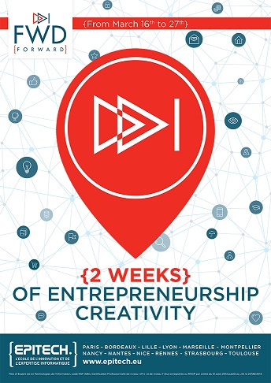

Forward
Planter les graines de demain
Ces deux semaines de créativité entrepreneuriale sont pensées pour pousser plus loin l'innovation, la disruption, pour faire fructifier les étincelles déclenchées par la Piscine Moonshot, grand moment d'ébullition collective. Pour faire germer les graines des success-stories de demain.
Business is business
Sauf qu'à la différence d'une Piscine Moonshot, les projets auront les deux pieds dans la réalité ou sur terre, en tout cas sur le terrain du business model canvas. Pour continuer d'acculturer les étudiants à toutes les problématiques contenues dans un lancement de start-up, une conférence avec des conférenciers très qualifiés leur est donnée tous les deux jours.
Work hard, Play smart
Ces deux semaines sont aussi une sorte de springbreak avant l'heure, une grande fête de l'école pour « marquer le coup » du début de la fin du cycle bachelor. Les associations d'élèves sont déjà à pied d'œuvre pour le marquer, ce coup.
source : http://www.epitech.eu/blogs/Forward-creativite-entrepreneuriale-startup-innovation.html